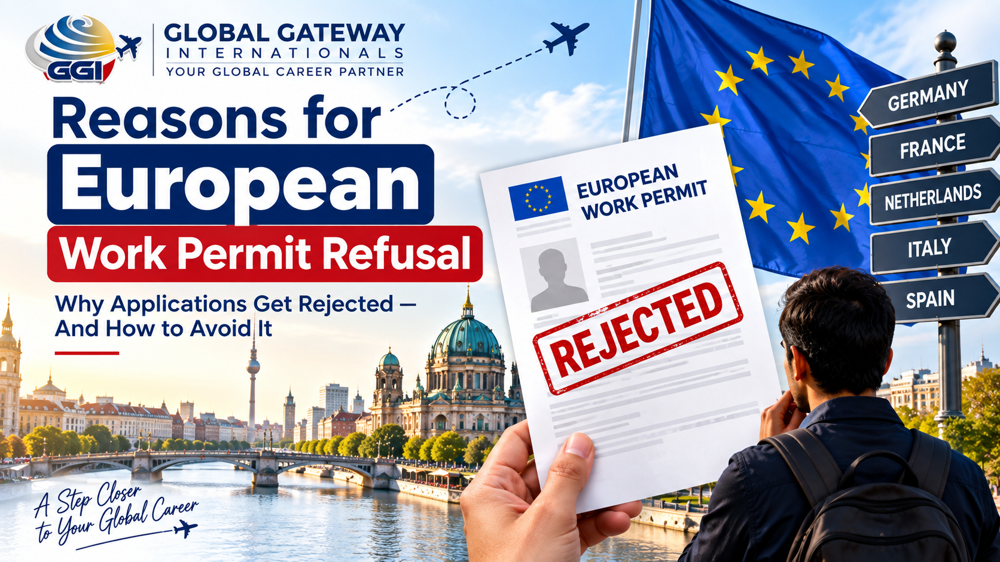

Reasons for European Work Permit Refusal
Why Applications Get Rejected — And How to Avoid It

Getting a work permit refusal from a European embassy feels bad — especially after all the paperwork, waiting, and hope you put into it. But here's the thing: most refusals aren't random. They follow a pattern, and once you know the pattern, you can actually fix your application instead of just resubmitting the same mistakes.
Let's go through exactly why European work permits get refused, and what you can do differently.
What's Actually Different Here
A Schengen tourist visa refusal and a work permit refusal are not the same thing. Tourist visa officers mainly check if you'll go back home. Work permit officers check something bigger — whether you, your employer, and your paperwork all meet the country's labour and immigration rules together.
That's why a work permit refusal usually points to a gap in one of three places: your documents, your employer's sponsorship, or your eligibility on paper.
Top Reasons Work Permits Get Refused
Salary below the required threshold. Countries like Germany (EU Blue Card) and the Netherlands have a minimum salary your job offer must meet. If your offer is even slightly under, the application gets rejected — no exceptions.
Labour market test not cleared. Many EU countries require the employer to first prove no local or EU candidate was available for the role. If this step is missing or weak, your permit gets refused, even if you're fully qualified.
Qualification not recognised as equivalent. Your degree or certificate may be genuine, but if it isn't recognised as equivalent to the local standard for that job role, the application fails on paper.
Incomplete or inconsistent employer documents. Missing company registration proof, unclear job contract terms, or mismatched job titles between the offer letter and the application form are common, avoidable refusal reasons.
Weak proof of genuine employment relationship. Some countries check if the job is real and ongoing — not just a formality to get you a visa. Vague contracts or missing role details raise doubts.
Financial or insurance gaps. Insufficient proof of funds for the initial settling-in period, or missing health insurance coverage, can lead to refusal even when the job offer itself is solid.
Past visa violations or inconsistent travel history. A previous overstay, a rejected Schengen visa, or unexplained gaps in your travel history can work against you, even for a completely new application.
How This Looks Country-Wise
Germany
Refusals here are mostly about the EU Blue Card salary threshold and whether your qualification is formally recognised (via a comparability assessment).
Netherlands
The employer must usually be a "recognised sponsor." If they're not registered as one, the application gets refused regardless of your profile.
France
Refusals often come from the labour market test — the employer must show the role couldn't be filled locally first.
Other EU Countries
The core issues repeat everywhere: salary mismatch, weak employer documentation, and unclear job legitimacy. The names of the rules change, the underlying reasons don't.
How to Avoid a Refusal Before You Apply
- Confirm your salary meets the exact published threshold for that visa category — not a rough estimate.
- Ask your employer to confirm they're registered/eligible to sponsor (this varies by country).
- Get your qualification checked for equivalency before applying, not after refusal.
- Keep your job title, contract, and application form worded exactly the same — no mismatches.
- Carry clear proof of funds and valid health insurance from day one.
- If you've had any past visa issue, address it upfront with a clear, honest explanation rather than hoping it goes unnoticed.
The Common Mistake People Make
Most people treat a refusal letter as the end of the road, or reapply with the exact same documents hoping for a different result. Neither works. The refusal letter is actually the most useful document you'll get — it tells you precisely what to fix. Read it carefully, correct that specific gap, and only then reapply.
Bottom Line
A European work permit refusal almost always comes down to a specific, fixable gap — salary, employer eligibility, documentation, or qualification recognition. It's rarely about you personally. Understand the real reason, fix it properly, and your next application stands a genuinely better chance.
FAQ
Can I reapply immediately after a work permit refusal?
Yes, in most cases there's no mandatory waiting period. But reapplying with the same gaps will likely get the same result — fix the actual issue first.
Does one refusal affect my future Europe applications?
Not automatically. Each application is assessed on its own merits. However, unexplained past refusals should be addressed honestly in future applications.
Is salary the biggest reason for refusal?
It's one of the most common and easiest to check in advance — especially for Germany's EU Blue Card and similar schemes. But employer documentation issues are just as frequent.
Can I appeal a work permit refusal instead of reapplying?
Yes, most countries allow an appeal within a set deadline. This is usually better when you believe the refusal was a genuine error, rather than a real eligibility gap.
Does my employer's status affect my refusal risk?
Yes, significantly. In countries like the Netherlands, only recognised sponsor employers can hire on certain permits — this is checked before your profile even comes into play.
Still Not Sure Why Your Application Was Refused?
Talk to our team at Global Gateway Internationals — we'll review your refusal letter and help you build a stronger, correct application.
Get Free Counselling →